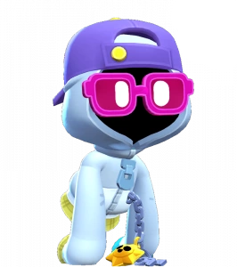

¿Quién es Shade?
Este montón de ropa oculta innumerables misterios, pero sus alucinantes gafas de sol no son uno de ellos. Gus lo descubrió y le dio el nombre de Shade, y ahora los dos brawlers vagan juntos por la estación fantasmal.
Shade es un brawler Épico que tiene una salud moderada, un daño variable y una inmensa utilidad con su Súper. Sus Atributos le permiten a Shade cargar pasivamente su Súper si un Brawler enemigo está dentro de su radio y moverse sobre el agua. Los ataques de sombra se abrazan en un arco amplio y de corto alcance, que causa el doble de daño en el centro. Para su Súper, corre hacia adelante y atraviesa obstáculos momentáneamente.
|  |
NIVEL DE FUERZA 11 |
Sus gadgets
BRAZOS LARGOS: El próximo ataque principal tiene un 50% más de alcance. |
 |
APARICIÓN ABRUMADORA: Shade asusta a los enemigos cercanos y los ralentiza durante 4 segundos. |
Sus habilidades estelares
 |
ESPRINT ESPECTRAL: Cuando Shade golpea a los enemigos en el epicentro de su ataque principal, obtiene un breve aumento de velocidad de movimiento. |
 |
SUDADERA ANTIBALAS: Shade obtiene un 30% de reducción de daño mientras permanezca en su forma astral. |
 Braian Arancibia
Braian Arancibia Aya El Baarar
Aya El Baarar